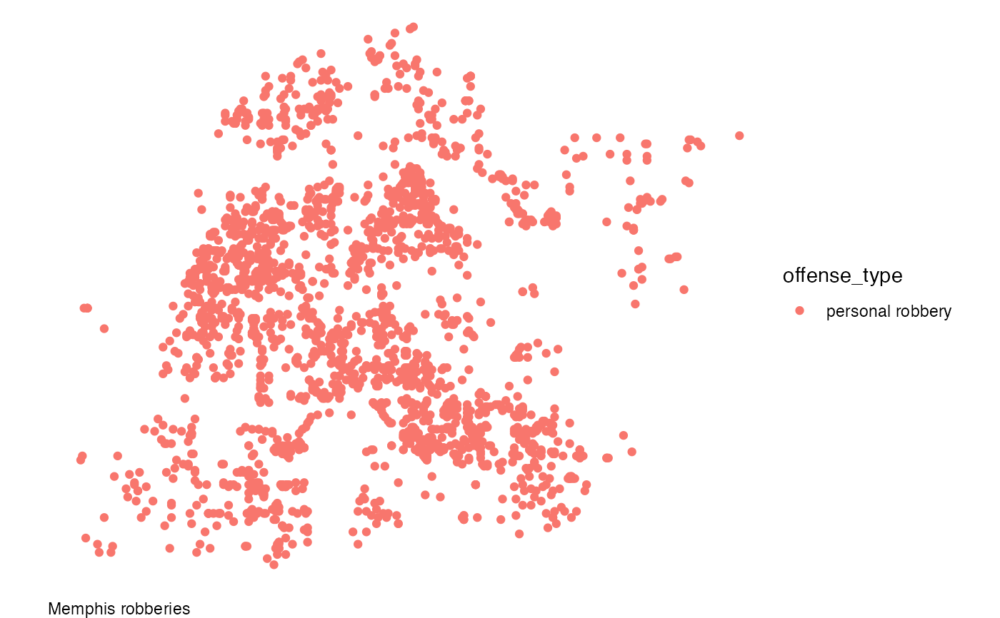

hotspot_map() creates a map from an sf object or the result of an
sfhotspot analysis using reasonable defaults. Maps include an OpenStreetMap
base map by default and are returned as ggplot2::ggplot objects, so they
can be customised with ggplot2 layers, scales and themes.
Usage
hotspot_map(object, mapping = NULL, ...)
# S3 method for class 'sf'
hotspot_map(
object,
mapping = NULL,
...,
basemap_type = "osm",
basemap_zoom = NULL,
basemap_attribution = NULL,
caption = NULL,
quiet = TRUE
)Arguments
- object
An
sfobject or an object returned by an sfhotspot analysis.- mapping
An aesthetic mapping created by
ggplot2::aes(), orNULLfor no aesthetic mappings. This argument can be used only for ordinarysfobjects, not objects with anhspt_*class created by one of thehotspot_*()family of functions.- ...
For ordinary
sfobjects, fixed aesthetics and other arguments passed toggplot2::geom_sf(). For hotspot-result objects, arguments passed to the correspondingggplot2::autoplot()method.- basemap_type
A map type passed to the
typeargument ofggspatial::annotation_map_tile(), or"none"for no base map.- basemap_zoom
The zoom level passed to
ggspatial::annotation_map_tile(), orNULLto choose it automatically.- basemap_attribution
Attribution for the tile provider, or
NULLto use the statement known forbasemap_type. A non-empty string is required for a custom or otherwise unknown map type.- caption
Additional text to display in the map caption, or
NULLfor no additional text. Any explanatory caption generated by the plotting method is retained above this text and the base-map attribution is retained below it.- quiet
If
TRUE(the default), suppress progress bars and other messages. IfFALSE, show tile-download progress and other messages.
Value
A ggplot2::ggplot object.
Details
For an ordinary sf object, mapping supplies aesthetic mappings for the
feature layer and ... supplies fixed values and other arguments to
ggplot2::geom_sf(). Hotspot-result objects determine their own aesthetic
mappings, so mapping cannot be supplied for those classes.
Examples
hotspot_map(memphis_robberies, basemap_type = "none")
hotspot_map(
memphis_robberies,
mapping = ggplot2::aes(colour = offense_type),
basemap_type = "none",
caption = "Memphis robberies"
)
